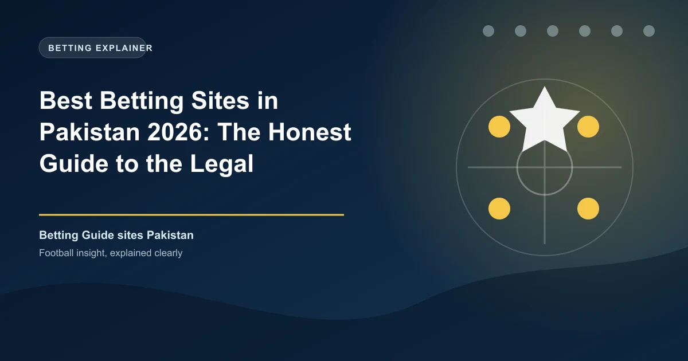

Best Betting Sites in Pakistan 2026: The Honest Guide to the Legal Landscape

Pakistan is often called the world's largest unregulated cricket betting market, but there is nothing about it that a review site should celebrate: gambling is prohibited, sites are blocked, and offshore operators offer no legal protection. Here is the honest 2026 picture.

Before listing anything, the truth: Pakistan has no legal online betting sites, no licensed sportsbooks, and no regulator issuing betting licences. Gambling is prohibited under the Prevention of Gambling Act of 1977, reinforced by the Pakistan Penal Code and by Article 37(g) of the Constitution, which directs the state to prevent gambling in line with Islamic principles (maisir).
Yet by volume of money, Pakistan is one of the largest betting markets on earth. Analysts estimate the country's cricket betting handle at around $2.1 billion a year, driven overwhelmingly by the Pakistan Super League and the IPL, which draws an estimated 55 million Pakistani viewers per major fixture. That demand is served entirely by offshore platforms that operate in a legal grey zone, with no domestic protection for players.
If you are hunting for a best-betting-site list for Pakistan, the honest answer is that no list can recommend a legal site. What we can do is explain the law, what enforcement looks like in 2026, which platforms dominate the grey market, and the real risks you take by using them.
Pakistan Betting at a Glance
| Factor | Detail |
|---|---|
| Currency | Pakistani rupee (PKR) |
| Governing law | Prevention of Gambling Act 1977 (no update for online), Penal Code, Islamic law |
| Legal online betting | None — no licensed sportsbook or online bookmaker exists |
| Legal exceptions | Horse-racing tote betting (1979) and National Prize Bonds |
| Enforcement | PTA blocks sites; NCCIA declared 46 gambling apps illegal in Aug 2025 |
| Payments | JazzCash and Easypaisa agents (officially prohibited for betting), USDT-TRC20 crypto P2P, bank cards mostly blocked |
| Main betting driver | Cricket — PSL and IPL season peaks |
Know the Rules: A 1977 Law in a 2026 World
The Prevention of Gambling Act 1977 was written for physical gaming houses and has never been amended for the internet. That creates a grey zone: there is no specific statute saying using a betting app is a crime, but gambling itself is prohibited, and the state treats digital gambling as a serious enforcement matter.
Penalties on the books include fines and up to a year's imprisonment for operating a gambling facility, fines of up to Rs 5,000 and one year for participating in a common gaming house, and heavier cyber-crime charges under the Prevention of Electronic Crimes Act (PECA) 2016 for hosting or promoting gambling apps. In practice, documented prosecutions target operators, promoters and money handlers, not individual bettors using apps on personal phones. That has not protected the industry from a serious clampdown.
The Grey Market: What Pakistani Bettors Actually Use
Because no domestic option exists, bettors turn offshore. The platforms that dominate Pakistani cricket wagering are Curacao- or Gibraltar-licensed international brands: 1xBet, bet365, Parimatch, Melbet, 22Bet, 10Cric, Stake and Dafabet. Some hold strong overseas licences; several were named in the August 2025 NCCIA ban and blocked at ISP level, so access now typically requires a VPN and mirror domains.
It is important to say plainly what betting on these platforms means in Pakistan in 2026: none is licensed to take Pakistani customers, none answers to a Pakistani authority, and the State Bank of Pakistan restricts banks from processing gambling transactions. If a site refuses a withdrawal, freezes an account, or shuts down, your only recourse is the company and its foreign regulator. Reputable Malta-licensed operators, by contrast, actively block Pakistani registrations because their own rules forbid accepting players from jurisdictions where gambling is illegal.
How Payments Work in the Grey Market
Bank cards are largely unusable because banks refuse gambling merchant codes. Two workarounds dominate. The first is mobile wallets: JazzCash and Easypaisa have tens of millions of registered accounts, and while both explicitly prohibit gambling transactions in their terms, deposits are routed through third-party agents who convert cash. The second is crypto: P2P exchanges and USDT-TRC20 wallets, often with a 3-5% conversion spread, are the more anonymous route. In March 2026 Pakistan passed the Virtual Assets Act, bringing crypto under a regulatory framework, so the monitoring landscape is still settling.
Every one of these routes carries risk: wallet flags and freezes, FIA account inquiries on larger transfers, VPN data exposure, and the near-total absence of dispute protection.
Quick Comparison: Most-Used Offshore Platforms
| Platform | Why It Is Used in Pakistan | Status in Pakistan |
|---|---|---|
| 1xBet | Deepest PSL match markets and mirrors | Prohibited; blocked under Aug 2025 NCCIA order |
| bet365 | Best-in-class live streaming and in-play | Prohibited; blocked under Aug 2025 NCCIA order |
| Parimatch | Cricket-led offer, strong PSL coverage | Prohibited; blocked under Aug 2025 NCCIA order |
| Melbet / 22Bet | Cheap entry, mobile-first experience | Prohibited; blocked under Aug 2025 NCCIA order |
| Stake / 10Cric / Dafabet | Crypto deposits and cricket focus | Prohibited; blocked under Aug 2025 NCCIA order |
This table is market context, not a recommendation. None of these platforms is legal, safe from blocking, or protective of Pakistani players in 2026.
The Legal and Financial Risks, Straight
Betting from Pakistan in 2026 means betting without a license, without a regulator, without an ombudsman and frequently without a stable connection to your own money. Sites vanish or swap domains without notice. Large wins can trigger source-of-funds checks that freeze payments for months. If a platform becomes unreachable, your balance goes with it. And the enforcement environment is tightening, not relaxing, with AI-driven monitoring of gambling-linked transfers and new crypto rules.
Gambling will not be legalised here any time soon; religious and constitutional constraints make that politically near-impossible in the 2026-2028 window.
If You Still Bet: The Minimum Precautions
We cannot advise using illegal offshore platforms. If you make that choice anyway, the minimum sensible precautions are: use accounts in your own verified name only, never share PINs or OTPs, keep stakes small and within what you can afford to lose, hold records of every transaction, and understand that you have fundamentally no legal protection if the operator refuses to pay.
Responsible Gambling in Pakistan
There is no national gambling helpline because gambling is illegal. If betting stops being entertainment, the most powerful public health lever available to Pakistani players is simply to stop: the enforcement regime does that itself, and the safest bet in Pakistan is the one never placed. Never chase losses, never borrow to gamble, and if you or someone you know is struggling with betting behaviour, seek professional mental-health support.
Frequently Asked Questions
Is online betting legal in Pakistan?
No. Gambling is prohibited under the Prevention of Gambling Act 1977, and Pakistan has never licensed any online betting site. The only legal exceptions are horse-racing tote betting and National Prize Bonds.
Can you get in trouble for betting online in Pakistan?
Individual bettors using apps on personal phones are rarely prosecuted in practice; documented enforcement targets operators, promoters and money handlers. However, penalties on the books include fines up to Rs 5,000 and up to a year in prison for gaming-house participation, and the 2025 NCCIA crackdown has escalated enforcement significantly.
Which betting sites do Pakistani bettors use?
Offshore Curacao- and Gibraltar-licensed brands — 1xBet, bet365, Parimatch, Melbet, 22Bet, 10Cric, Stake and Dafabet — dominate. All are illegal in Pakistan, and most were blocked under the NCCIA order of August 2025.
How do Pakistani bettors deposit money?
Through JazzCash and Easypaisa agents (despite that both prohibit gambling transactions) and USDT-TRC20 cryptocurrency via P2P exchanges. Bank cards are widely refused because banks block gambling merchant codes.
Will Pakistan ever legalise online betting?
There is no current legislative movement toward legalisation, and religious and constitutional barriers make it politically unlikely in the 2026-2028 window.
Put These Principles Into Practice Today
Every strategy on this page is only as good as the markets you apply it to. Check the latest predictions, odds, and in-play opportunities below.
Last updated: August 2026 | By Tochukwu Mesigo |
Build Winning Accumulator Tickets
Generate optimized accumulator combinations from today's data-driven predictions. Set your target odds and get instant ticket suggestions.
Pro Ticket Builder →